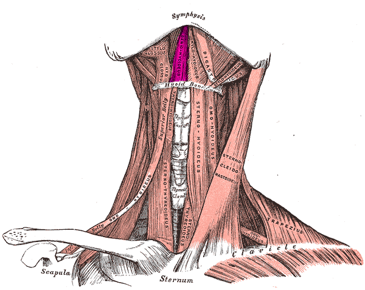
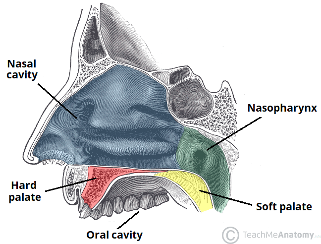
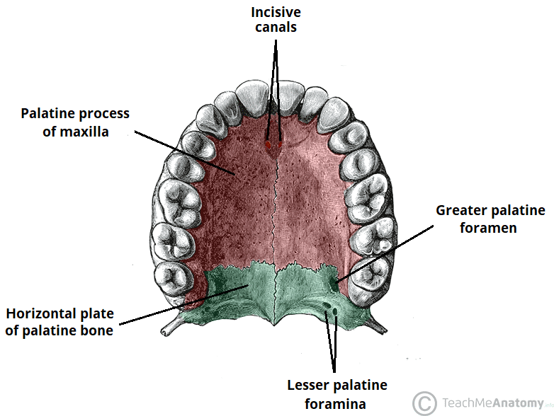
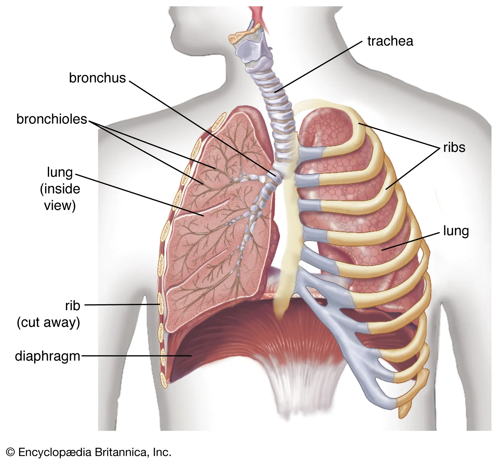

Science Based Speaking
Modern day debate at the highest levels has seen endless amounts of optimizations. Debaters are always seeking to gain an edge, be that through macros which leverage technology in-round, evidence production templates, or even file naming and formatting conventions.
One area which has been neglected however, is speaking. Debate is after all a communication activity, and no matter how great your arguments may be, if you can’t communicate those to the judge, a loss is imminent.
Speaking exercises and routines are often passed down and repeated out of folkloric habit, leaving their methods unquestioned and their exercises unoptimized. I’ve outlined areas of improvement and exercises below, leveraging insights from vocal training in music and drama that I feel would serve debaters well to add to their speaking routines.
Endurance
When training for endurance, a few principles seem relevant:
- Your training should be longer than the longest speech you will be required to give
- Your training should impose conditions on you that you have to overcome (i.e. the principles behind resistance training)
- You should incorporate progressive overload in your training
Exercise - Heavy Object
The principle behind this exercise is that it imposes resistance you have to engage your core to overcome. I’ve found this helps encourage diaphragmatic speaking and helps train endurance beyond merely reading straight down.
- Find some text to read, preferably text similar to what you’ll read in a round
- Find a heavy object, e.g. a large textbook
- Hold it away from your body at chest height
- Read straight down for 10 minutes
If you run out of content to read, you can briefly place the object down to scroll, but while spreading you should try to maintain resistance for the most part.
You can also use an app like Spreeder to automatically continuously display text on the screen so you don’t need to scroll.
Clarity
Clarity seems self-evidently important. However, the often touted gold standard “pen drill” has never really had evidential basis. Here are a few alternatives.
Exercise - Tongue Twister
Tongue twisters are often used as a warm up for singing or acting, and are great warm ups for debate, but can also be programmed into a regular routine. This website has a large collection of tongue twisters which you can use for the following exercise.
- Pick a random number from 1 to 500
- Go to that number tongue twister
- Repeat it 20 times
- Move to the next tongue twister
- Repeat 3-4
Exercise - Tongue Strengthening
The tongue and associated muscles (such as the Geniohyoid) are responsible for coordinating the movement of your mouth and vocal production. In order to improve one’s ability to speak clearly, it seems relevant to train these muscles and strengthen them.

We know from exercise science that isometrics and increased motor unit recruitment are the primary drivers of muscular hypertrophy. The literature on speech therapy for dysphagia patients also suggests that similar exercise principles and regiments apply to the tongue1 The following exercises leverages those principles:
- Press your tongue against your anterior (hard) palate
- Press as hard as you can, holding for 5 seconds
- Repeat step 2 a few times per day
- Press your tongue against your right/left molars
- Repeat 2-3


Respiratory Training
One of the most important and often underappreciated aspects of training your voice is training your respiration, i.e. breath control. I’ve included a few breathing exercises and warm-ups below from vocal coach Eric Arceneaux2 and others that I feel are most applicable and useful for debate, but would recommend you check out his other content if you have the time.
Using your Diaphragm
A mistake debaters often make, which leads to the dreaded nasally “spreading voice,” is breathing and speaking from their throat instead of leveraging their diaphragm. The diaphragm is what is responsible for controlling breathing. Contraction/relaxation causes enables exhalation, while contraction causes you to take-in air.3

In order to leverage the diaphragm while speaking, we first need to sense if we are using it or not. If you’re familiar with weightlifting, this is akin to the “mind-muscle connection” that helps spot improper form.
Another thing to note is your posture. A hunched over or poor posture inadvertently biases against your diaphragm when you breathe. You should try to maintain an upright posture when you spread, placing your computer at an appropriate height such that it doesn’t require you to bend over nor does it block the line of sight between you and the judge by using things like a stand.
Exercise - 360 Breath
You can follow along in the video below at (3:24)
- Place your hands gently over your stomach
- Take a deep breath in, focusing your breath such that your stomach moves out
- Try to keep your shoulders stable
- Exhale
Repeat the above a few times. Then, place your hands over the small of your back and finally around your sides, repeating the breathing for each position.
Breath Control
Many debaters note that they run out of breath quickly when spreading. This causes them to have to breathe frequently, which not only slows down spreading, but can be unpleasant to hear. Usually, this is not due to a lack of lung capacity, but rather a lack of breath control: debaters rapidly release more breath than is necessary to produce the required sound, and run out of breath.
Exercise - Sustained Hiss
To fix this, you should work on controlling and sustaining your release of air and steadying your exhalation. An exercise that’s frequently recommended that helps with this is the sustained hiss. You can follow along in the video below.
- Breathe in
- Hold your breath for a few seconds
- Slowly release air, making a hissing noise
- Try to sustain that hiss for as long as possible
- Importantly, don’t stop hissing; it should be continuous
Miscellaneous
Here’s a few more miscellaneous tips for improving your speaking that I found while conducting research for this article.
Chewing
A study tested the effect of continuous chewing—specifically, chewing gum—prior to to speaking on clarity and speech performance.4 They found that
speech accuracy and performance during the nonword repetition task was enhanced when it followed 10 min of continuous chewing
but conversely that
speech accuracy and performance was degraded when it followed 10 min of continuous talking
Before a tournament or during warm ups, you could try chewing gum and doing breathing exercises, and should also attempt to limit your speech, especially spreading so as not to fatigue yourself, in particular right before the round.
Loudness
A study found that speaking clear and loud speaking improved intelligibility, even compared to voluntary speech rate reduction (slowing down), and that slowing down fared worse than one’s regular speech pattern.5
On average, intelligibility for the clear and loud conditions improved by .07–.11 scale values on a continuous scale with numerical values ranging from 0 to 1.0 (see descriptive statistics in the Results section). This translates into a 7%–11% improvement in scaled sentence intelligibility, which likely would be meaningful in a challenging perceptual environment like the multitalker babble used in our study (e.g., Van Nuffelen et al., 2010).
Scaled intelligibility for the control group also was best for the loud condition (M = .171, SD = .087), followed by clear (M = .189, SD = .085), habitual (M = .258, SD = .094), and slow (M = .329, SD = .166).
This suggests that a focus of debaters should be vocal projection, and ensuring that they’re speaking loudly without changing their actual pronunciation of words or voice. I.e. you should project without purposefully using a “screaming” or “yelling” voice.